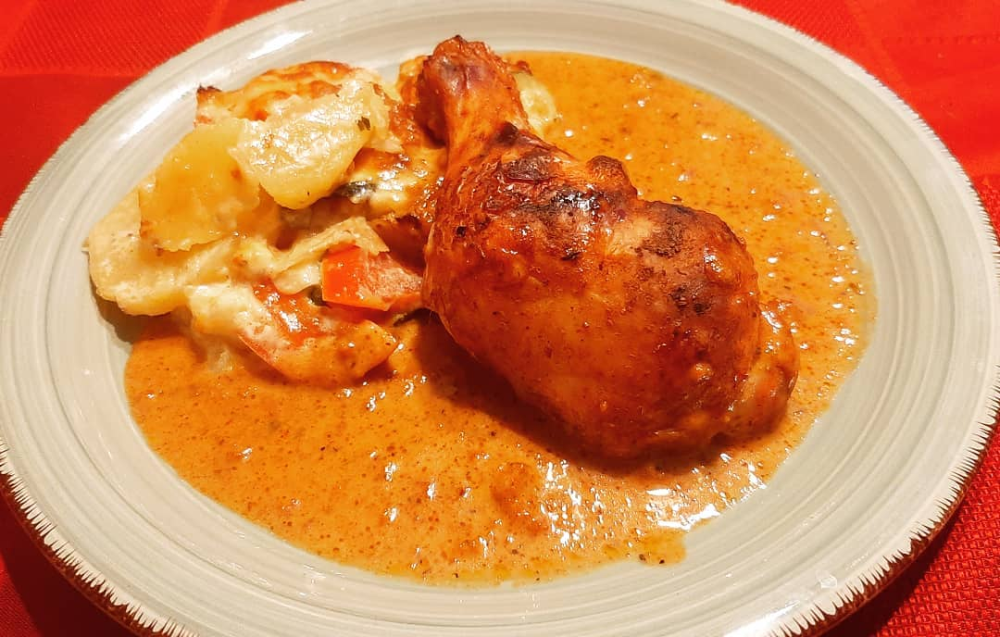

Horčicová omáčka podľa @rozsypallukas — Normy Jedál
Ze včera mi zbyly gratinované brambory tak jsem udělal kuřecí stehno v hořčičné omáčce.
#vecere #dinner #chicken #kure #kurecistehno #horcicovaomacka #mustardsauce #gratinovanebrambory #gratin #ilovecooking #foodphotography #foodstagram #foodblogger #varenidoma #varenijeradost #vareni #cooking #cookingathome #cook